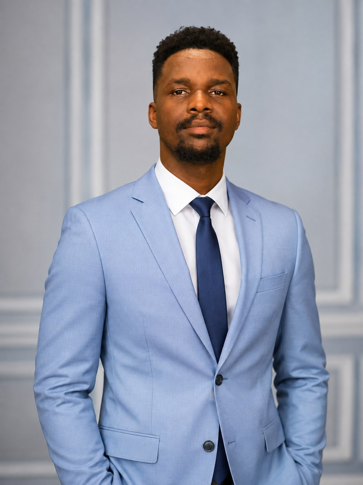

Jeremiah Mathew Manga
Founder and Executive Director
Jeremiah is a Nigerian humanitarian, data analyst, field supervisor and youth development advocate from Kebbi State. He founded BMsP Africa to build pathways that help young people turn potential into meaningful, productive action.
Background
Born in 1999 in Yelwa, Yauri LGA, Kebbi State, with family roots in Zuru LGA.
Education
St. Dominic Primary School (Salama); Government Science Secondary School (Yelwa-Yauri); B.Sc. Statistics, Kebbi State University of Science and Technology, Aliero (KSUSTA).
National service
NYSC in Sokoto State, with work connected to NPHCDA in Monitoring and Evaluation and Disease Control.
Experience
Consultant, Christian Health Association of Nigeria (CHAN). Database Entry Encoder, Médecins Sans Frontières (MSF).
Skills
Data collection, management, cleaning, validation and analysis; field supervision; quality assurance; reporting.
Vision
To raise a generation of self-aware, productive, innovative and responsible leaders who build enterprises and transform communities: Discover, Develop, Create, Impact.
“When individuals discover who they are, develop how they think, and apply what they have learned, they can create opportunities not only for themselves but also for others.”